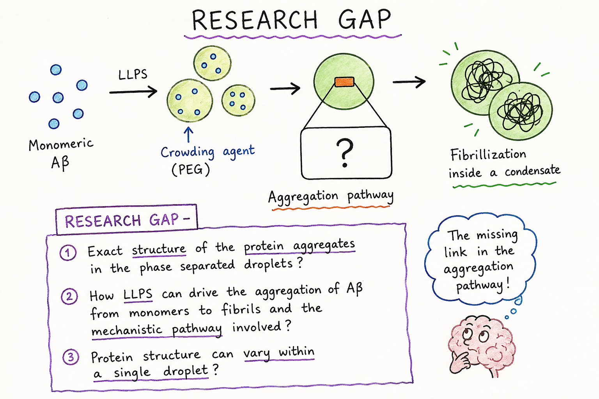

Ph.D. in Chemistry
The University of Alabama, Tuscaloosa
Expected May 2027
I am a Ph.D. Materials Scientist specializing in semiconductor process development, advanced surface characterization, and nanoscale materials engineering. My research bridges chemistry and semiconductor manufacturing through area selective deposition, self assembled monolayers, carbon nanotube integration, and chemical metrology. I enjoy transforming scientific ideas into scalable technologies for next generation electronics.
Surface Characterization: AFM, AFM IR, O PTIR, FTIR, Raman, XPS, SEM, XRD, UV Vis, and Spectroscopic Ellipsometry
Process Development: ALD, Area Selective ALD, Flowable CVD, SAMs, and Thin Film Engineering
Programming and Software: MATLAB, JMP, OriginPro, ImageJ, CasaXPS, Gwyddion, and SOLIDWORKS
The University of Alabama, Tuscaloosa
Expected May 2027
The University of Alabama, Tuscaloosa
August 2024
National Institute of Science Education and Research
July 2019
August 2021 to Present

May 2026 to November 2026

Hillsboro, Oregon
May 2025 to August 2025
May 2016 to June 2016
May 2017 to June 2017

ACS Meetings and Expositions Presenter at ACS Spring 2024